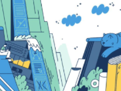

What is Front End Development
Front-End Development is the most straightforward path to what some would refer to as the IT proper.
You are actually working with programming code using languages and frameworks. Contrary to the industry stereotype,
Frontend Developers have their share of challenges at work as well.
Learn more
What are UI and UX Design?
If you ask a random person to define design, they will mostly be talking about illustrations, fonts,
and maybe even colors. This, however, is just one aspect. To answer the question properly,
we have to look at what both UI and UX design are.
Learn more

Color Theory 101: Color Symbolism and Color Relationships
Even though UI/UX designers do not make clothes or highly seasonal marketing materials,
they should have a solid grasp of the color theory. Apply it well to catch the client’s attention,
and they will be happy to let you try and captivate the customers. Let’s look at the key aspects:
color symbolism, color relationships, and color palettes.
Learn more
What is Project Management in IT
While middle management positions are quite exhausting and hectic,
a Project Management job in IT is nothing like that.
Here, you get to talk with clients, closely interact with your team,
and solve challenges along the way.
Learn more